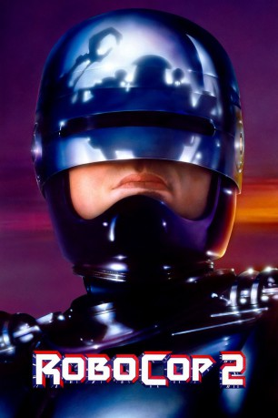

#237 RoboCop 2
 
 IMDB-Wertung: 5.8 / 10
IMDB-Wertung: 5.8 / 10  Metascore: 42
Metascore: 42 
Detroit droht im Chaos zu versinken. In den Straßen regiert nackte Gewalt. Neue Designerdrogen wie "Nuke" finden reißenden Absatz. Die Polizei greift gar nicht erst ein. Einzig RoboCop und seine Partnerin Anne Lewis gehen noch auf Streife. Doch RoboCop ist möglicherweise nicht mehr lange im Dienst. Der Megakonzern OCP, der ihn einst konstruieren ließ, plant ein verbessertes Nachfolge-Modell. RoboCop sieht sich einem verbitterten Krieg an mehreren Fronten gleichzeitig ausgesetzt...
Jahr: 1990
Dauer: 117 Minuten
FSK: 18
Land: USA Studio: Orion PicturesTonspuren: DTS - ,
Untertitel: Deutsch,
Auflösung: 1080p (1920×1080) Größe: 11878 MB
Genre: Action, Krimi, Sci-Fi, Thriller
Regisseur: Irvin Kershner
Drehbuch: Edward Neumeier, Michael Miner, Frank Miller, Frank Miller, Walon Green
Soundtrack: Leonard Rosenman
Darsteller:
- Belinda Bauer als Dr. Juliette Faxx
 John Glover als Magnavolt Salesman
John Glover als Magnavolt Salesman- Leeza Gibbons als Jess Perkins
 John Ingle als Surgeon General
John Ingle als Surgeon General Tom Noonan als Cain
Tom Noonan als Cain Roger Aaron Brown als Whittaker
Roger Aaron Brown als Whittaker- Gabriel Damon als Hob
 Mark Rolston als Stef
Mark Rolston als Stef Thomas Rosales Jr. als Chet
Thomas Rosales Jr. als Chet- Brandon Smith als Flint
 Wallace Merck als Gun Shop Owner
Wallace Merck als Gun Shop Owner Peter Weller als Robocop
Peter Weller als Robocop Michael Medeiros als Catzo
Michael Medeiros als Catzo- Galyn Görg als Angie
- Linda Thompson als Mother with Baby
 Nancy Allen als Anne Lewis
Nancy Allen als Anne Lewis- Angie Bolling als Ellen Murphy
 Jeff McCarthy als Holzgang
Jeff McCarthy als Holzgang Ken Lerner als Delaney
Ken Lerner als Delaney- Willard E. Pugh als Mayor Kuzak
 Felton Perry als Donald Johnson
Felton Perry als Donald Johnson Dan O'Herlihy als The Old Man
Dan O'Herlihy als The Old Man- John Doolittle als Dr. Schenk
 Robert DoQui als Sgt. Reed
Robert DoQui als Sgt. Reed Stephen Lee als Duffy
Stephen Lee als Duffy George Cheung als Gilette
George Cheung als Gilette- Wanda De Jesus als Estevez
 Tzi Ma als Tak Akita
Tzi Ma als Tak Akita Gary Bullock als Hack Doctor
Gary Bullock als Hack Doctor- Fabiana Udenio als Sunblock 5000 Woman
 Jerry Nelson als Darren Thomas
Jerry Nelson als Darren Thomas- Harold Burns als Bad Brad , uncredited
 Patricia Charbonneau als Robocop Technician , uncredited
Patricia Charbonneau als Robocop Technician , uncredited- Irvin Kershner als Gerber - Death Row Inmate in Computer File , uncredited
- Robert H. Lambert als Kid in Arcade , uncredited
- Keith Lewis als OCP Cop , uncredited
 Frank Miller als Frank, the Chemist , uncredited
Frank Miller als Frank, the Chemist , uncredited- Randall Oliver als OCP Cop , uncredited
- Frank Page als City Official , uncredited
- Jimmy Ray Pickens als Cop , uncredited
 Mario Machado als Casey Wong
Mario Machado als Casey Wong- Lila Finn als Homeless Woman
- John Hateley als Purse Snatcher
- Gage Tarrant als Hooker
- Lily Chen als Desperate Woman
- Clinton Austin Shirley als Jimmy Murphy
- Martin Casella als Yuppie
- Phil Rubenstein als Poulos
- Richard Reyes als Angry Citizen
- Charles Bailey als Angry Citizen
Datei: X:\4-Tetralogie(M-Z)\RoboCop\RoboCop 2 (1990, FSK18, 1920x1080).mkv seit 15.02.2015
Festplatte: HD Collection-3(N-Z)-6(A-Z)
 Es gibt insgesamt 7 Filme in der Gruppe '4-Tetralogie(M-Z)\RoboCop'
Es gibt insgesamt 7 Filme in der Gruppe '4-Tetralogie(M-Z)\RoboCop'